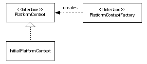
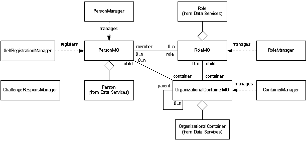
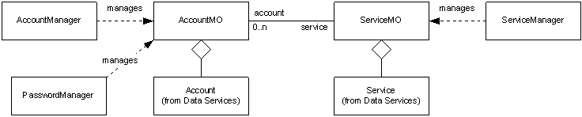
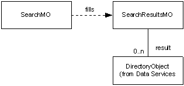
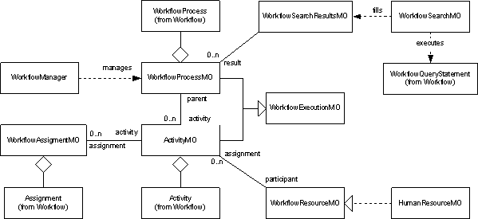

|
|||||||||||
| PREV PACKAGE NEXT PACKAGE | FRAMES NO FRAMES | ||||||||||
See:
Description
| Interface Summary | |
|---|---|
| ManagedObject | Interface of all managed objects. |
| PlatformContext | Interface representing a client context with the provisioning platform. |
| PlatformContextFactory | Interface for creating a platform context. |
| Class Summary | |
|---|---|
| BulkRequest | Represents a bulk request submitted to the provisioning platform. |
| InitialPlatformContext | Provides a starting point for establishing a platform context. |
| Request | Represents a request submitted to the provisioning platform. |
| RequestManager | Provides an interface for retrieving requests from the provisioning platform. |
| UserAuthInfo | Contains a user's authentication information, including user id and credentials. |
| UserRequest | |
| Exception Summary | |
|---|---|
| ApplicationException | This exception is thrown when application-level errors occur such as the violation of business rules. |
| AuthenticationException | Deprecated. |
| AuthorizationException | This class identifies an authorization failure. |
| BulkException | BulkException is thrown during the course of invoking operations on more than one object such as a multi-person suspend. |
| ITIMCredentialExpiredException | This class identifies an authentication failure. |
| ITIMFailedLoginException | This class identifies an authentication failure. |
| PartialListResultsException | This class is the result of partial results submitted to the workflow |
| SchemaViolationException | General exception for LDAP schema violations such as invalid syntax or missing required attribute errors. |
Provides a remotable application programming interface for provisioning specific functions.
The Identity Manager provisioning platform is designed with extensibility as a primary goal. The platform architecture has defined several applications that perform different provisioning specific functions, such as password management, identity management, and account management. These applications have well defined external interfaces that can be used by clients to trigger their functionality. A great example of this would be the user interface that is deployed with the Identity Manager product. These interfaces, however, can be used by clients that would like a different entry point into the platform, such as a more customer specific user interface or a different application integrating its capabilities with the platform. This document describes the Application Programming Interface (API) that is available for interfacing to the provisioning applications.
The Application API has been developed to provide the developers of custom front-ends to Identity Manager a portable and backwards-compatible interface to the Identity Manager applications.
The API consists of a set of java classes that abstract the more commonly used functions of the provisioning platform, such as identity management, password management, and account management. The classes that make up this API are the same classes the Identity Manager product uses for its out-of-the-box user interface.
In the platform architecture, the application tier makes use of all the lower level services to implement the end-to-end business logic involved in a provisioning action. This may require workflow processes to execute (see the Workflow API), the data store to be updated (see the Data Services API), or resources to be provisioned (see the Service Provider API). These implementation details of a provisioning action are encapsulated within the application module to ensure to the client that the action will be implemented correctly and that backwards compatibility with platform upgrades will not be an issue.
One aspect of the business logic behind a provisioning action is authorizing the caller to perform the action by using the security mechanisms put in place the Authorization module in the platform architecture. For this reason, all Application API calls require user information about the caller so that the proper authorization can take place. To make calls in an unrestricted manner, the client must act as the administrator and pass the administrator’s information into the API calls.
The API consists of a set of java classes that abstract the more commonly used functions of the provisioning platform, such as identity management, password management, and account management. All of these classes can be found in the com.ibm.itim.apps package and its sub-packages.
The Application API is remote able. This allows clients to communicate with the provisioning platform without requiring co-location. To establish communications with the provisioning platform, a context must be created. This context is established using a set of classes that make up a framework that can support connecting to different platform deployment configurations easily without changes to the client. The PlatformContext class represents the context of a connection to a provisioning platform. This class is merely an interface whose implementation may be different based on the deployment configuration of the target platform. The entry point for the client to establish the a platform context is through the InitialPlatformContext class. This class will ensure the proper implementations to the context interfaces are constructed for the client by either using the PlatformContextFactory passed by name to it at construction time, or by looking up the correct PlatformContextFactory class in the Identity Manager.properties file.

Figure 1 - Context Class Diagram
As stated previously, the Application API is secure and requires clients to authenticate to the platform. This authentication is performed through a Java Authentication and Authorization Service (JAAS) standard Java Pluggable Authentication Module (PAM) framework and API. This framework supports users authenticating to multiple applications, each with possibly different authentication mechanisms. Identity Manager has provided its own authentication mechanism based on its own authentication framework (see the Identity Manager Authentication API). This mechanism is configured for use in the client environment through a security configuration file. The JAAS framework supports the different authentication modules through a series of Callbacks and CallbackHandlers. Identity Manager has provided its own CallbackHandler, the PlatformCallbackHandler, for clients to use to so they can input their authentication information. This handler has support for password based authentication and a challenge and response authentication. The client may wish to provide their own CallbackHandler for providing this information, but it must handle the required Identity Manager authentication Callbacks. These Callbacks are documented in the PlatformCallbackHandler and can be found in the com.ibm.itim.apps.jaas.callback package. The following snippet illustrates the use of JAAS to authenticate to the Identity Manager platform.
PlatformContextHandler handler = new PlatformCallbackHandler("jdoe", "secret");
handler.setPlatformContext(context);
LoginContext lc = new LoginContext("ITIM", handler);
lc.login();
The above snippet is performing a password based authentication. The context parameter is an instance of the PlatformContext class with the required connection information. This snippet assumes that the ITIM application was registered as a login module in a security properties file. The file can be specified when the client process was invoked as an argument (with the –D option), or the registration could be made in the Java security properties file named <JAVA_HOME>/lib/security/java.security, where <JAVA_HOME> refers to the directory where the JDK was installed. The login module entry for Identity Manager should appear as:
ITIM {
com.ibm.itim.apps.jaas.spi.PlatformLoginModule required
};
Setting the platform context on the handler is optional. Instead, the platform context information could be provided as properties to the Identity Manager login module entry. The supported properties are url (URL of the platform), factory (EJB JNDI context factory), name (EJB user name), and pwsd (EJB user password).
Another concept common to many of the Application API calls is the asynchronous request. Many of the API calls are asynchronous, or non-blocking, and may take minutes or even hours if human interaction is required to fulfill the request (i.e., through an approval process). The Request class represents an asynchronous request. Many calls will return a Request object so that the client can check the status of their submission. The RequestManager class provides the client with a interface for querying, or locating, requests they may not have a handle to currently.
Figure 2 - Request Class Diagram
The classes that provide interfaces to the identity specific capabilities of the platform can be found in the com.ibm.itim.apps.identity package. The pattern followed by this API consists of a managed object that represents an entity to manage (i.e., account, role, person), a value object holding attribute information data about that entity, and a manager that an aggregate of other operations within the context of the type of managed object to manage (i.e., creating objects, validating objects, etc.).
Figure 3 - Application Pattern Diagram
The use of the value object is key because all API calls are fulfilled by the platform with the most up-to-date information possible at the time of the call. This means the platform will query its data store on every request. If the client wishes to simply get a “snapshot” of the managed object’s information, only querying the data store once for performance reasons, obtaining the value object will best achieve the goal.

Figure 4 - Identity Applications Class Diagram
The PersonMO class provides the external interfaces for querying and manipulating a person, or identity, in the system. The PersonManager provides an aggregation of other identity related operations, such as identity creation and fast access searches. The SelfRegistrationManager provides the specific operations related to self registration.
The RoleMO class provides the external interfaces for querying and manipulating a role, dynamic or static, in the system. The RoleManager provides an aggregation of other role related operations, such as role validation.
The OrganizationalContainerMO class provides the external interfaces for querying and manipulating a node in the organizational tree (org chart) in the system. The ContainerManager provides an aggregation of other container related operations, such as reorganizations.
The ChallengeResponseManager provides the capability to self manage the challenge and responses that can be used for authentication in lieu of a password.
The classes that provide interfaces to the provisioning specific capabilities of the platform can be found in the com.ibm.itim.apps.provisioning package. This package also follows the managed object pattern with managers and value objects.

Figure 5 - Provisioning Applications Class Diagram
The ServiceMO class provides the external interfaces for querying and manipulating a service in the system. This class can also represent a “hosted”, or leased, service provided by an application service provider (ASP) in the system. The ServiceManager provides an aggregation of other service related operations, such as service communications testing.
The AccountMO class provides the external interfaces for querying and manipulating an account in the system. The AccountManager provides an aggregation of other account related operations, such as account validation and the determination of authorized services. The PasswordManager provides password validation, generation, and change operations.
The com.ibm.itim.apps.search package holds the classes that provide general search utilities for managed objects, such as people, services, and accounts. Since each of these objects can have extensible schemas associated with them, the query interfaces provided in the package are very flexible and support extensible filtering.

Figure 6 - Search Application Class Diagram
The SearchMO class represents a managed object search. It provides the interface for defining the parameters of the search, such as a flexible string-based filter, sorting details, and the scope of the search. The SearchResultsMO holds the results and provides interfaces for retrieving the results as a whole or by pages. There are also interfaces for re-sorting the results. To reduce overhead of repetitive calls back the platform to obtain information about each object returned from a search, the results are made up of value objects directly instead of managed objects. It is still easy to obtain managed objects if needed by simply extracting the distinguished name from the value object.
The com.ibm.itim.apps.workflow package holds the classes that provide workflow control and auditing capabilities. These capabilities include searching for pending and historical processes, and retrieving and completing participants’ workflow assignments.

The WorkflowProcessMO class provides the external interfaces for querying and manipulating a workflow process in the system. The WorkflowManager provides some convenient query operations for workflow processes.
The WorkflowActivityMO class provides the external interfaces for querying and manipulating a workflow activity in the system. These activities are part of a workflow process. They can be found by querying the WorkflowProcessMO.
The WorkflowAssignmentMO class provides the external interfaces for querying and manipulating a workflow assignment in the system. An assignment provides a link between a workflow activity and a workflow resource. The workflow resource is “assigned” the workflow activity. These assignments can be found by querying either the ActivityMO or the WorkflowResourceMO.
The WorkflowResourceMO interface provides the external interface for querying assignments for a workflow resource. The HumanResourceMO represents a human workflow participant that implements this interface.
The WorkflowSearchMO class represents a workflow process search. It provides the interface for defining the parameters of the search through a workflow query statement. The WorkflowSearchResultsMO holds the results and provides interfaces for retrieving the results as a whole or by pages. There are also interfaces for re-sorting the results. To reduce overhead of repetitive calls back the platform to obtain information about each object returned from a search, the results are made up of value objects (WorkflowProcesses) directly instead of managed objects (WorkflowProcessMOs). It is still easy to obtain managed objects if needed by simply extracting the ID from the value object.
The com.ibm.itim.apps.lifecycle package provides lifecycle management capabilities on supported business domain objects, including Person and Account via the LifecycleManager class
try {
// create platform context
Hashtable env = new Hashtable();
env.put(InitialPlatformContext.CONTEXT_FACTORY, "com.ibm.itim.apps.impl.websphere.WebSpherePlatformContextFactory");
env.put(PlatformContext.PLATFORM_URL, "iiop://localhost");
PlatformContext platform = new InitialPlatformContext(env);
// create authentication handler
PlatformCallbackHandler handler = new PlatformCallbackHandler("jdoe", "secret");
handler.setPlatformContext(platform);
// attempt authentication
LoginContext lc = new LoginContext("ITIM", handler);
lc.login();
// create manager
PersonManager mgr = new PersonManager(platform, lc.getSubject());
// find user
Collection people = mgr.getPeople("uid", "ssmith", null);
// assume only one ssmith for this example
PersonMO person = (PersonMO)people.iterator().next();
if (person != null) {
Person valueObject = person.getData();
// update email address locally
valueObject.setMail("ssmith@acme.com");
// commit change immediately
person.update(valueObject, new Date());
}
} catch (AccountExpiredException aee) {
System.out.println(aee.getMessage());
} catch (CredentialExpiredException cee) {
System.out.println(cee.getMessage());
} catch (FailedLoginException fle) {
System.out.println(fle.getMessage());
} catch (LoginException le) {
System.out.println(le.getMessage());
} catch (RemoteException re) {
System.out.println(re.getMessage());
} catch (AuthorizationException ae) {
System.out.println(ae.getMessage());
} catch (ApplicationException ae) {
System.out.println(ae.getMessage());
}
|
|||||||||||
| PREV PACKAGE NEXT PACKAGE | FRAMES NO FRAMES | ||||||||||